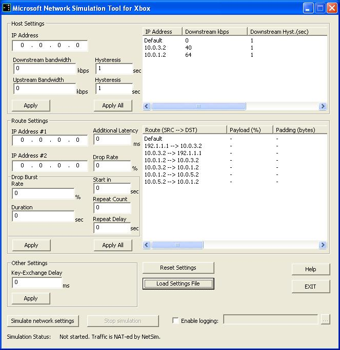

The Network Simulator tool simulates bad network behavior for testing online connectivity. Because testing is typically performed on a local area network (LAN), realistic network behavior usually does not occur in the testing environment. The NetSim tool solves this problem by performing network address translation (NAT) between Xbox clients and the Xbox Live service, at the same time introducing packet loss, latency, and bandwidth limitations.
USAGE: netsim
Note For additional information on NetSim installation and configuration, see the Using the Xbox Network Conditions Simulator whitepaper.
In much the same role served by ordinary NAT software or hardware, the Network Simulator serves as the default gateway between clients and the Internet. Xbox consoles send packets to NetSim at its internal address, then NetSim passes the packets on to the Internet through an external IP address. Unlike ordinary NAT implementations, NetSim does not pass the packets through unaltered. Instead, it simulates the following:
The other major difference between NetSim and a typical NAT implementation is that NetSim can handle multiple internal IP addresses. The Network Simulator separates individual client Xbox consoles from each other by putting them on separate subnets. This separation forces packet flow through the development system running NetSim, rather than routing those packets directly between consoles. Because NetSim is handling all the packets between Xbox consoles, it has the opportunity to change the network conditions between those consoles. NetSim also has the opportunity to change network conditions between the Xbox consoles and the rest of the Internet.
The NetSim tool uses VLAN, a virtual NIC driver, to simulate the existence of multiple network cards (each of which has its own IP) on the development system. Only one network adapter is required to run NetSim.
In order for NetSim to handle traffic from Xbox consoles, those consoles must be connected to Xbox Live. There are two scenarios in which NetSim works:
The NetSim tool cannot handle network traffic from an Xbox console that is connecting directly to a PC, nor can it handle network communications between two Xbox consoles that are connected to each other with a system link cable.
Because not every game title supports Xbox Live, the Xbox Development Kit installer does not automatically install Network Simulator. To install NetSim, click Programs on the Start menu, then click Microsoft Xbox SDK folder, and then click the Setup Microsoft Network Simulation Tool for Xbox shortcut. Follow the installer's instructions to install NetSim. To run NetSim, click the Network Simulation Tool for Xbox shortcut (located in the Programs folder of the Start menu).
The NetSim tool can support up to 256 client Xbox consoles. This limitation derives from the IP range (10.0.0.2 to 10.0.255.2) that client consoles can have. Be sure to assign each Xbox console a unique IP address in this range; use the Title IP address field in the XDK Launcher Network Settings screen. For each client whose IP is 10.0.x.2, that client's Gateway and Primary DNS should be configured to 10.0.x.1. Each client's Subnet mask should be 255.255.255.0, which forces all packets through NetSim before going anywhere else (such as another Xbox console on the same network). Other fields in the Network Settings screen are not required by NetSim.
The NetSim user interface serves as a control panel for starting and stopping the tool's modification of packets, as well as a place to experiment with different network scenarios. The NetSim user interface is pictured below:

By default, NetSim passes packets without modification, behaving much like a traditional NAT program. To apply configuration settings and make NetSim modify its handling of data packets, click Simulate network settings. The NetSim tool applies any settings you have adjusted, either through the user interface or by loading a configuration file with Load Settings File.
To return NetSim to unmodified packet handling, click Stop simulation. To close NetSim, click EXIT.
To load a configuration file, click Load Settings File. The NetSim tool displays a standard file dialog box, from which you can choose a configuration file. (See the Configuring NetSim section, below, for more information about the format of NetSim configuration files.)
The two list boxes on the right half of the NetSim display show the current settings that NetSim will use. Keep in mind that these settings may differ from what is displayed elsewhere in the NetSim user interface. Once NetSim is running, only the setting displayed in these list boxes will affect the operation of NetSim.
If you want to try out bandwidth, hysteresis, latency, drop rate, or drop burst without taking the time to add those settings to a configuration file, you can use the NetSim user interface to quickly experiment with different scenarios.
For bandwidth and hysteresis, enter values in the Host Settings panel. To apply the settings only to the specified IP address, click Apply. To apply the settings to every IP address listed in the right half of the Host Settings panel, click Apply All.
Although the user interface uses the term "Additional Latency", the latency value specified in the user interface replaces the latency value specified in any loaded configuration file.
For latency, drop rate, and drop burst settings, enter values in the Route Settings panel. To apply the settings only to the route specified by IP Address #1 and IP Address #2, click Apply. To apply the settings to all the routes listed in the right half of the Route Settings panel, click Apply All.
To simulate a delay caused by key-exchange at the start of the session, in the Other Settings panel, in the Key-Exchange Delay text box, enter the amount of time for the delay.
Definitions of the settings in the user interface are described in the Configuring NetSim section, below.
Note Key-exchange delays currently cannot be set in a configuration file. This feature will be added in a future release.
To revert NetSim to its original, blank state, select Reset Settings. The NetSim tool discards all settings you have loaded through Load Settings File, or that you have adjusted by selecting either Apply or Apply All.
To enable logging of NetSim activity to a file, select the Enable logging check box, and then specify the name of an output file in the text box. Selecting the button to the right of the text box displays a File-Open dialog box, which can be used to specify the log file. If no file is specified or if the NetSim is unable to open the file, no logging will take place.
The Network Simulator takes its configuration information from three places:
netsim.ini, a text file that must reside in the same
directory as the netsim.exe executable. The Network
Simulator will not run if netsim.ini is not present..cfg extension. However, configuration files may have any file name because they are simply text files.
The CONFIG subdirectory of the NetSim installation directory
contains sample configuration files.The netsim.ini file contains required NAT
settings that let NetSim know what IP addresses are assigned to the Xbox
consoles, as well as the development system that is running NetSim.
In addition to the NAT settings in netsim.ini,
you may optionally load a configuration file that contains information to
control how NetSim alters the flow of data. A .cfg file may
contain four different flow control settings:
Note You can add comments to
netsim.ini or to the .cfg file by preceding the
comments with a semicolon (;). The Network Simulator ignores
everything on a line from a semicolon to the end of that line.
Network address translation settings are a required part of the configuration file. The first NAT tag, NetworkInterface.Xbox, controls the range of virtual IP addresses available to local Xbox consoles:
[NetworkInterface.Xbox] Ip=10.0.0.1 ; Starting IP for interior IPs assigned to client connections. IpEnd=10.0.255.1 ; Ending IP for interior IPs assigned to client connections.
The Ip parameter defines the first IP address in the
range available for Xbox consoles. IpEnd defines the last IP
address in the range.
Note The IP address range may only include addresses of the form 10.0.x.1, where x is between 0 and 255, inclusive.
Note If two computers running NetSim are on the same subnet, and they both allocate the same range of IP addresses for Xbox consoles, the first copy of NetSim to be started locks out the second. If you need to run more than one copy of NetSim on the same subnet, make sure each copy's NetworkInterface.Xbox section is configured to use a different range of IP addresses.
The second NAT tag, NetworkInterface.Internet, defines the external network settings for the development system on which NetSim runs. NetworkInterface.Internet is optional; if you omit this NAT tag, the Network Simulator attempts to configure the Internet interface via DHCP. If you wish to explicitly set the development system's external network settings, use the NetworkInterface.Internet tag:
[NetworkInterface.Internet] Ip=157.56.11.124 ; Static IP address of this interface. IpMask=255.255.254.0 ; Subnet mask of this interface. IpGateway=157.56.10.1 ; Gateway of this interface. DNSServer=157.54.5.109 ; DNS Server of this interface.
Set Ip to the static IP address
of the development system, IpMask to the system's subnet mask,
IpGateway to the system's gateway address, and
DNSServer to the DNS server used by the system.
The Latency tag defines a delay that will be applied to packets transmitted by NetSim. Latency settings are optional, and the configuration file may contain more than one Latency tag. The first tag is Latency.1, followed by Latency.2, and so on. Numbers following the Latency tag must be sequential. The following example shows a Latency tag:
[Latency.1] val=200 src=10.0.13.2 dst=10.0.54.2
Use the val parameter to specify a latency in
milliseconds. Depending on
the presence and values of the src and dst
parameters, this latency applies to network traffic differently.
Four possible scenarios are available:
Both src and dst are
present. In this case, the latency value applies only to network traffic
from the source IP (src) to the destination IP
(dst). In the example above, all packets traveling between
the Xbox consoles at 10.0.13.2 and 10.0.54.2 are delayed by 200
milliseconds.
Only src is present. In this case, all
network traffic from the indicated IP address is delayed. For example,
the following Latency tag delays by 500 milliseconds all traffic from the Xbox
console at 10.0.128.2:
[Latency.2] val=500 src=10.0.128.2
Only dst is present. In this case, all
network traffic to the indicated IP address is delayed.
Neither src nor dst are
present. In this case, all traffic that NetSim handles is affected. The
following example applies 100 milliseconds of latency to all packets
flowing through NetSim:
[Latency.3] val=100
The optional Bandwidth tag allows you to limit the bandwidth of packet transmission for a particular Xbox console. You may specify more than one Bandwidth tag by giving them unique numbers: Bandwidth.1 for the first tag, Bandwidth.2 for the second, and so on. Numbers following the Bandwidth tag must be sequential. The following is a sample bandwidth tag:
[Bandwidth.1] addr=10.0.13.2 in=64 out=40 inhyst=1 outhyst=1
The addr parameter specifies the IP address of
the Xbox console whose bandwidth should be limited. The other three parameters
specify the speeds to which communication is limited (bandwidth limitations are
all expressed in kilobits per second). Use in to limit the speed of
data coming into the Xbox console; use out to limit the speed of
data leaving the Xbox console. The above example limits incoming data to the
Xbox console at 10.0.13.2 to 64 kbps. The above example restricts data leaving 10.0.13.2
to 40 kbps.
The inhyst and outhyst values specify incoming and
outgoing hysteresis in seconds.
NetSim attempts to smooth packet throughput to match a given bandwidth.
To do this, it either delays or drops packets that arrive too quickly.
The hysteresis value determines the exact point at which NetSim
starts dropping packets instead of delaying them.
The value specifies a time limit in seconds before which
data that exceeds the bandwidth limitation is delayed and after which
data that exceeds the bandwidth limitation is dropped. If the bandwidth
specified by the in value is exceeded for longer than the time
specified by inhyst, the excess data is lost. Similarly for out
and outhyst.
To give a concrete example of hysteresis, assume the bandwidth limit is 64 kbit/sec and the hysteresis value is 2 seconds. Say the first packet encountered is 128 kbit in length. In this case, this packet will fill the entire 2-second hysteresis window. If the next packet is 64 kbit in length, this second packet will be either dropped or delayed, depending on when it is encountered. If the second packet is encountered less than one second after the first packet, the second packet will be dropped because queuing it would overflow the 2-second hysteresis window. If the second packet is encountered more than one second after the 128 kbit packet, the second packet will fit in the window. As a result, the second packet is queued and sent some time after the 128 kbit packet has been transmitted. (The 128 kbit packet is transmitted 2 seconds after it was received.)
The Droprate tag is optional, and it specifies a percentage of packets that should be dropped from the transmission stream. You may specify more than one Droprate tag by adding a number to the end of each tag: Droprate.1 is the first tag, Droprate.2 is the second tag, and so on. Numbers following the Droprate tag must be sequential. The following example shows a Droprate tag:
[Droprate.1] val=2 src=10.0.14.2 dst=10.0.230.2
The val parameter represents the percentage of
packets that should be dropped. Depending on the values of the src
and dst parameters, NetSim drops packets from different
connections.
If both src and dst are
present, NetSim drops packets only from the data flow between the source
address (src) and the destination address
(dst). The preceding example drops two percent of the
packets that pass from 10.0.14.2 to 10.0.230.2.
If only src is specified, NetSim drops
packets from all traffic leaving that particular Xbox console. For
example, the following Droprate tag instructs NetSim to toss out
30 percent of the packets leaving the Xbox console at 10.0.119.2:
[Droprate.2] val=30 src=10.0.119.2
If only dst is specified, NetSim drops
packets from all traffic entering that particular Xbox console.
If neither src nor dst are
specified, NetSim applies the packet drop percentage to all traffic that
passes through NetSim. The following example introduces five percent
packet loss to all data flowing through NetSim:
[Droprate.3] val=5
The optional Dropburst tag simulates sudden bursts of packet loss over specified intervals. You may specify more than one Dropburst tag by giving them unique numbers: Dropburst.1 for the first tag, Dropburst.2 for the second, and so on. Numbers following the Dropburst tag must be sequential. The following is a sample drop burst tag:
[Dropburst.1] val=2 duration=10 startin=30 repeatcount=200 repeatdelay=1 src=10.0.42.2 dst=10.0.8.2
The val parameter specifies the percentage of
packets that NetSim will drop, and duration specifies the length
(in seconds) of the interval during which NetSim will drop packets.
The startin parameter sets the number of seconds to wait before
starting the first drop burst interval. The repeatcount parameter
specifies how many intervals to perform, and repeatdelay specifies
how many seconds should elapse between each interval.
Depending on the values of the src and dst
parameters, NetSim creates drop bursts on different connections, as
follows:
If both src and dst are
present, NetSim drops packets only from the data flow between the source
address (src) and the destination address
(dst). The preceding example drops two percent of the
packets that pass from 10.0.42.2 to 10.0.8.2 during a 10 second interval,
an interval which occurs every 100 seconds.
If only src is specified, NetSim drops
packets from all traffic leaving that particular Xbox console. For
example, the following Dropburst tag instructs NetSim to perform a
15 second burst, during which NetSim tosses out
30 percent of the packets, leaving the Xbox console at 10.0.119.2:
[Dropburst.2] val=30 duration=15 src=10.0.119.2
If only dst is specified, NetSim simulates
a drop burst only on traffic entering that particular Xbox console.
If neither src nor dst are
specified, NetSim applies the drop burst setting to all traffic that
passes through NetSim. The following example introduces drop bursts five
seconds long, during which five percent of the packets passing through
NetSim are lost.
[Dropburst.3] val=5 duration=5